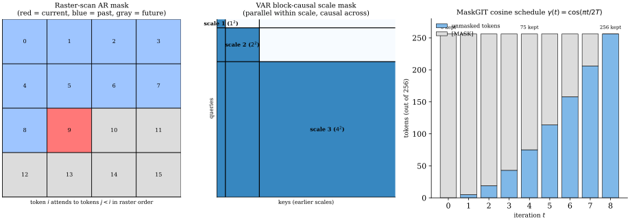

Autoregressive visual generation evolved through four overlapping waves: (i) pixel-level models that factorise the image distribution as a product of conditionals over raw RGB values (PixelRNN (Oord, Kalchbrenner, and Kavukcuoglu 2016), PixelCNN (Oord, Kalchbrenner, Vinyals, et al. 2016), PixelCNN++ (Salimans et al. 2017)); (ii) discrete tokenisation that compresses pixels into learned codebooks before autoregression (VQ-VAE (Oord et al. 2017), VQ-VAE-2 (Razavi et al. 2019), RQ-VAE (Lee et al. 2022)); (iii) transformer-based generation that ports GPT-style decoders to image and text-to-image (iGPT (Chen et al. 2020), DALL-E (Ramesh et al. 2021), Parti (Yu et al. 2022), LlamaGen (Sun et al. 2024)), inheriting the encoder-decoder sequence-modelling architecture from neural machine translation (Sutskever's sequence-to-sequence formulation (Sutskever et al. 2014) and Bahdanau's content-based attention (Bahdanau et al. 2015)) where the conditional-token-by-token factorisation was first stress-tested at scale; and (iv) alternative orderings and parallel decoding that break the strict raster-scan dependency (MaskGIT (Chang et al. 2022), MAGE (Li et al. 2023), Muse (Chang et al. 2023), ARDM (Hoogeboom et al. 2022), VAR (Tian et al. 2024), Infinity (Han et al. 2025), InfinityStar (Liu et al. 2025), VARGPT (Zhuang et al. 2025)). Video extends these designs along the temporal axis (VideoGPT (Yan et al. 2021), TATS (Ge et al. 2022), Phenaki (Villegas et al. 2023), MCVD (Voleti et al. 2022)) and scene-conditioned generation injects layout priors (Make-A-Scene (Gafni et al. 2022), Semantic-Diffusion (Wang et al. 2023)). Theoretical scaffolding around scale and substrate is provided by autoregressive scaling laws (Henighan et al. 2020), ViT scaling (Zhai et al. 2022), and hardware-lottery analysis (Hooker 2020).
Current results on standard image-generation benchmarks show AR models reaching parity with and in places exceeding diffusion. The leaderboard below collates the headline numbers (ImageNet-256 FID for class-conditional, zero-shot MS-COCO FID for text-to-image where applicable, tokenizer column reports the discrete code source, latency is per-image at the listed resolution, and the per-row citation names the method's source paper).
| Method | Year | Params | Tokenizer | Decoding | ImageNet-FID | COCO-FID | Latency |
|---|---|---|---|---|---|---|---|
| PixelRNN (Oord, Kalchbrenner, and Kavukcuoglu 2016) | 2016 | ~50M | Raw 8-bit pixel | raster-AR | 3.00 bpd | very slow | |
| PixelCNN (Oord, Kalchbrenner, Vinyals, et al. 2016) | 2016 | ~80M | Raw 8-bit pixel | raster-AR | 3.03 bpd | slow | |
| PixelCNN++ (Salimans et al. 2017) | 2017 | ~95M | Raw + logistic mix | raster-AR | 2.92 bpd | slow | |
| VQ-VAE-2 (Razavi et al. 2019) | 2019 | ~13B* | Hierarchical VQ | raster-AR | 31.11 | minutes | |
| iGPT-L (Chen et al. 2020) | 2020 | 1.4B | k-means 9-bit pixel | raster-AR | 36.4 | minutes | |
| DALL-E (Ramesh et al. 2021) | 2021 | 12B | dVAE 8192 | raster-AR | ~17 | ~30s/64 cands | |
| MaskGIT (Chang et al. 2022) | 2022 | 227M | VQ-GAN 1024 | masked | 6.18 | ~0.5s | |
| Make-A-Scene (Gafni et al. 2022) | 2022 | 4B | Triple-VQ | raster-AR | 11.84 | ~10s | |
| Parti-20B (Yu et al. 2022) | 2022 | 20B | ViT-VQGAN 8192 | raster-AR | 7.23 | ~15s | |
| MAGE-L (Li et al. 2023) | 2023 | 300M | VQ-GAN 1024 | masked | 6.93 | ~0.5s | |
| Muse (Chang et al. 2023) | 2023 | 3B+3B | ViT-VQGAN 8192 | masked+SR | 7.88 | 1.3s | |
| LlamaGen-3B (Sun et al. 2024) | 2024 | 3.1B | VQ-GAN 16384 | raster-AR | 2.18 | 7.2 | ~2s w/ vLLM |
| VAR-d30 (Tian et al. 2024) | 2024 | 2.0B | Multi-scale RQ-VAE | next-scale | 1.73 | ~0.3s | |
| Infinity-2B (Han et al. 2025) | 2025 | 2B | LFQ 32-bit (no book) | next-scale | 0.69 GE | 0.8s @ 1024 | |
| InfinityStar (Liu et al. 2025) | 2025 | 8B | 3D LFQ | next-scale | 83.74 VB | 40s/5s 720p | |
| VARGPT (Zhuang et al. 2025) | 2025 | 7B | VAR-style + CLIP | next-scale | 14.8 | ~0.3s+text |
(*) The VQ-VAE-2 parameter cell is not a measured figure. The paper reports layer counts and hidden widths for its two PixelCNN-style priors but no aggregate parameter count, so the ~13B entry is an inference someone made downstream and should not be quoted as the paper's number. The LlamaGen-3B COCO-FID cell carries the same warning for a different reason: LlamaGen's text-conditional model is the 775M variant, the 3.1B model is class-conditional only, and the paper evaluates the text model qualitatively without reporting a zero-shot MS-COCO FID. Read that cell as unsourced rather than as a LlamaGen result. "GE" denotes GenEval composite score (text-to-image alignment, higher is better, 0-1) and "VB" denotes VBench composite (text-to-video, higher is better, 0-100). Neither is comparable to FID. Pixel-level rows report bits-per-dimension instead of FID because Inception-v3 features are uninformative at 3232 resolution.
The table is restricted to image models reporting FID or a text-to-image alignment composite, which leaves out several papers covered later in the chapter because they report on incomparable benchmarks: VideoGPT, TATS, Phenaki and MCVD report FVD on BAIR, UCF-101, Kinetics-600 and Cityscapes, ARDM reports bits-per-character on Text8 and bits-per-dimension on CIFAR-10, and Semantic-Diffusion reports Cityscapes and ADE20K FID under a segmentation-conditioned protocol. Those numbers are given in the sections that discuss each paper. Folding them into one column would imply a comparison the benchmarks do not support.
